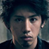

Takahiro Moriuchi
Tunnetaan myös nimellä Taka, on yhtyeen päävokalisti. Hän on ollut yhtyeen kokoonpanossa alusta alkaen, ja kirjoittaa sanat heidän kappaleisiin.
ONE OK ROCK (lausutaan "one o'clock") on japanilainen rokkiyhtye, jonka nykyiseen kokoonpanoon kuuluvat laulaja Takahiro Moriuchi, kitaristi Toru Yamashita ja rumpali Tomoya Kanki. Yhtye perustettiin vuonna 2005 Tokiossa, Japanissa.
Tunnetaan myös nimellä Taka, on yhtyeen päävokalisti. Hän on ollut yhtyeen kokoonpanossa alusta alkaen, ja kirjoittaa sanat heidän kappaleisiin.
Yhtyeen ns. bandleader sekä kitaristi. Toru on yhtyeen alkuperäinen perustaja, ja kuului ennen hip-hop ryhmään Heads ennen ONE OK ROCK:in perustamista.
Yhtyeen rumpali, joka tunnetaan paremmin vain Tomoyana. Vaikka hän ei ole ollut yhtyeen alkuperäinen jäsen, hän on silti ollut jokaisella yhtyeen albumilla. Hän on myös yhtyeen vanhin jäsen (34).